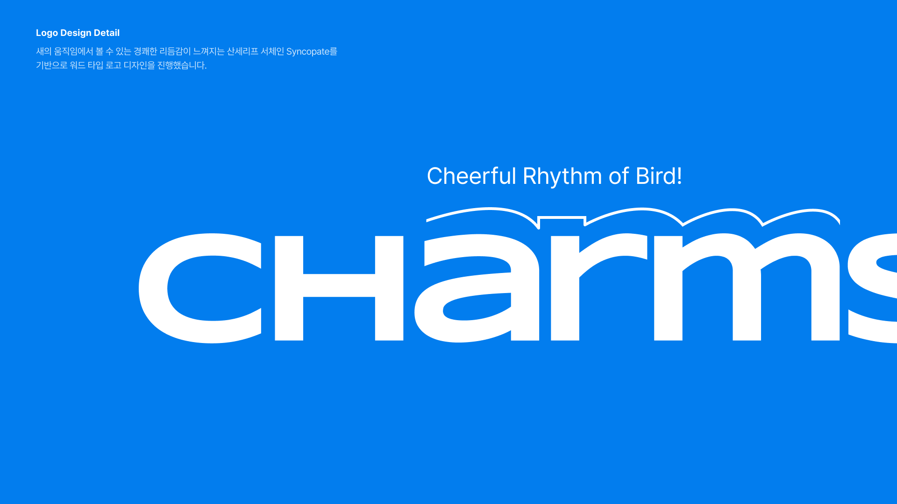
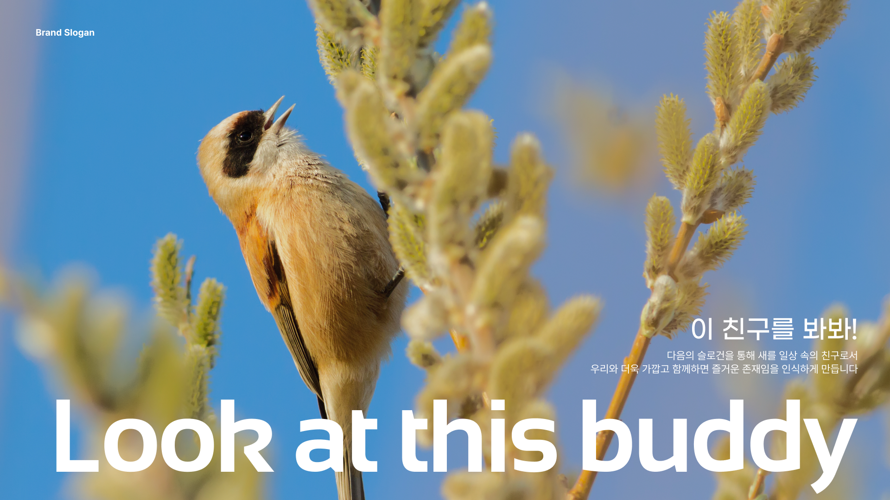
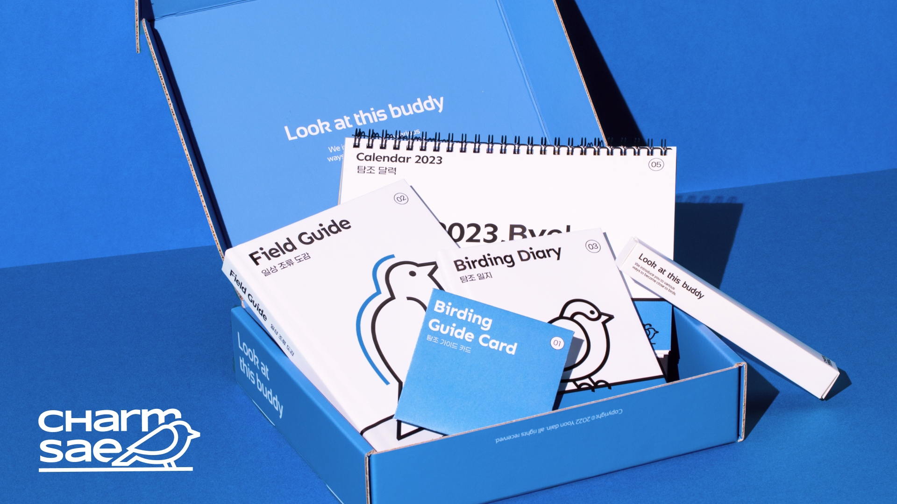
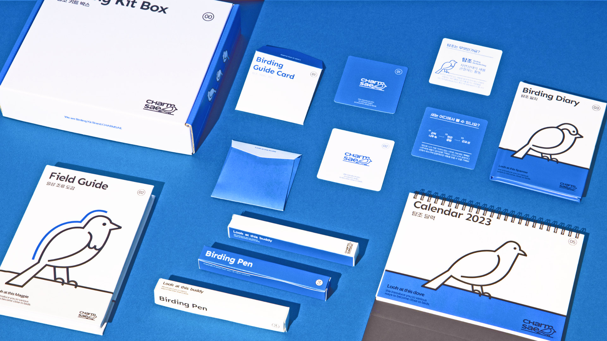
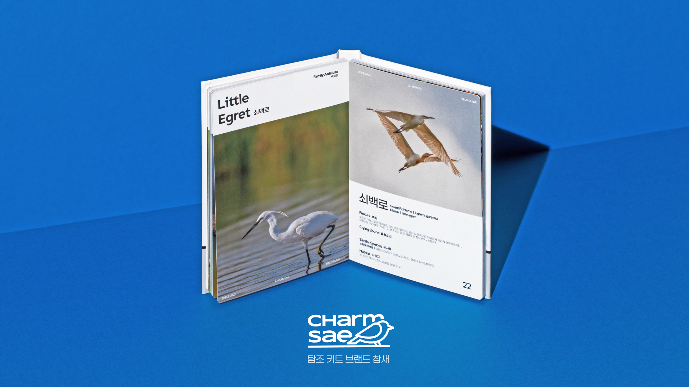
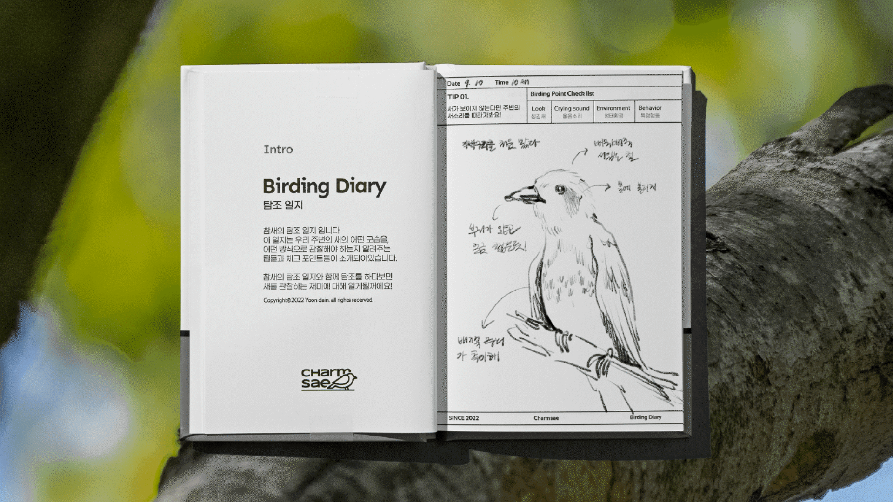
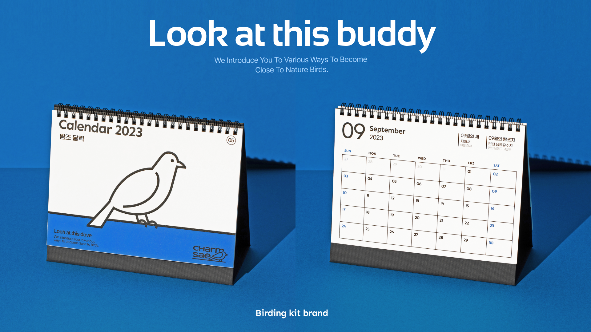

- 
- 
- 
- 
- 
- 
- 
Charmsae
일상 속 특별한 친구들에 대해 알려주는 탐조 키트 브랜드, 참새
- Date2022.09-12
- TypePersonal Work
- CategoryBX design
탐조의 대중화를 위한 탐조 키트 브랜드 참새의 브랜드 전략을 기획하고, 가치와 정체성을 강화할 수 있는 아이덴티티를 디자인합니다.
The Joy of Bird Watching
새를 관찰하는 즐거움, 탐조
탐조란, 자연 상태의 새를 관찰하는 활동입니다. 우리나라에선 아직 낯선 취미이기에, 기존의 탐조 인식에서 벗어나 쉽고 간편하게 탐조에 대해 알려주는 탐조 키트 브랜드 참새를 소개합니다.